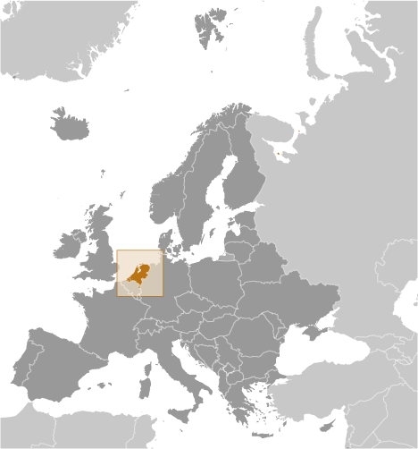
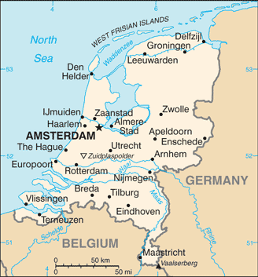
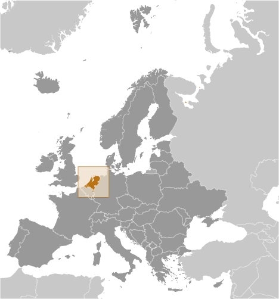
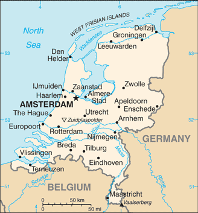

Europe :: NETHERLANDS
Introduction :: NETHERLANDS
-
The Dutch United Provinces declared their independence from Spain in 1579; during the 17th century, they became a leading seafaring and commercial power, with settlements and colonies around the world. After a 20-year French occupation, a Kingdom of the Netherlands was formed in 1815. In 1830, Belgium seceded and formed a separate kingdom. The Netherlands remained neutral in World War I, but suffered German invasion and occupation in World War II. A modern, industrialized nation, the Netherlands is also a large exporter of agricultural products. The country was a founding member of NATO and the EEC (now the EU) and participated in the introduction of the euro in 1999. In October 2010, the former Netherlands Antilles was dissolved and the three smallest islands - Bonaire, Sint Eustatius, and Saba - became special municipalities in the Netherlands administrative structure. The larger islands of Sint Maarten and Curacao joined the Netherlands and Aruba as constituent countries forming the Kingdom of the Netherlands.
Geography :: NETHERLANDS
-
Western Europe, bordering the North Sea, between Belgium and Germany52 30 N, 5 45 EEuropetotal: 41,543 sq kmland: 33,893 sq kmwater: 7,650 sq kmcountry comparison to the world: 135slightly less than twice the size of New Jerseytotal: 1,053 kmborder countries (2): Belgium 478 km, Germany 575 km451 kmterritorial sea: 12 nmcontiguous zone: 24 nmexclusive fishing zone: 200 nmtemperate; marine; cool summers and mild wintersmostly coastal lowland and reclaimed land (polders); some hills in southeastmean elevation: 30 melevation extremes: lowest point: Zuidplaspolder -7 mhighest point: Mount Scenery 862 m (on the island of Saba in the Caribbean, now considered an integral part of the Netherlands following the dissolution of the Netherlands Antilles)note: the highest point on continental Netherlands is Vaalserberg at 322 mnatural gas, petroleum, peat, limestone, salt, sand and gravel, arable landagricultural land: 55.1%arable land 29.8%; permanent crops 1.1%; permanent pasture 24.2%forest: 10.8%other: 34.1% (2011 est.)4,860 sq km (2012)an area known as the Randstad, anchored by the cities of Amsterdam, Rotterdam, the Hague, and Utrecht, is the most densely populated region; the north tends to be less dense, though sizeable communities can be found throughout the entire countryfloodingvolcanism: Mount Scenery (887 m), located on the island of Saba in the Caribbean, last erupted in 1640; Round Hill (601 m), a dormant volcano also known as The Quill, is located on the island of St. Eustatius in the Caribbean; these islands are at the northern end of the volcanic island arc of the Lesser Antilles that extends south to Grenadawater pollution in the form of heavy metals, organic compounds, and nutrients such as nitrates and phosphates; air pollution from vehicles and refining activities; acid rainparty to: Air Pollution, Air Pollution-Nitrogen Oxides, Air Pollution-Persistent Organic Pollutants, Air Pollution-Sulfur 85, Air Pollution-Sulfur 94, Air Pollution-Volatile Organic Compounds, Antarctic-Environmental Protocol, Antarctic-Marine Living Resources, Antarctic Treaty, Biodiversity, Climate Change, Climate Change-Kyoto Protocol, Desertification, Endangered Species, Environmental Modification, Hazardous Wastes, Law of the Sea, Marine Dumping, Marine Life Conservation, Ozone Layer Protection, Ship Pollution, Tropical Timber 83, Tropical Timber 94, Wetlands, Whalingsigned, but not ratified: none of the selected agreementslocated at mouths of three major European rivers (Rhine, Maas or Meuse, and Schelde); about a quarter of the country lies below sea level and only about half of the land exceeds one meter above sea level
People and Society :: NETHERLANDS
-
17,084,719 (July 2017 est.)country comparison to the world: 66noun: Dutchman(men), Dutchwoman(women)adjective: DutchDutch 78.6%, EU 5.8%, Turkish 2.4%, Indonesian 2.2%, Moroccan 2.2%, Surinamese 2.1%, Bonairian, Saba Islander, Sint Eustatian 0.8%, other 5.9% (2014 est.)Dutch (official)note: Frisian is an official language in Fryslan province; Frisian, Low Saxon, Limburgish, Romani, and Yiddish have protected status under the European Charter for Regional or Minority Languages; Dutch is the official language of the three special municipalities of the Caribbean Netherlands, English is a recognized regional language on Sint Eustatius and Saba, and Papiamento is a recognized regional language on BonaireRoman Catholic 28%, Protestant 19% (includes Dutch Reformed 9%, Protestant Church of The Netherlands, 7%, Calvinist 3%), other 11% (includes about 5% Muslim and fewer numbers of Hindu, Buddhist, Jehovah's Witness, and Orthodox), none 42% (2009 est.)0-14 years: 16.41% (male 1,434,919/female 1,368,437)15-24 years: 12.07% (male 1,051,319/female 1,010,969)25-54 years: 39.52% (male 3,387,716/female 3,364,010)55-64 years: 13.28% (male 1,128,484/female 1,139,703)65 years and over: 18.73% (male 1,449,752/female 1,749,410) (2017 est.)total dependency ratio: 53.1youth dependency ratio: 25.6elderly dependency ratio: 27.4potential support ratio: 3.6 (2015 est.)total: 42.6 yearsmale: 41.5 yearsfemale: 43.6 years (2017 est.)country comparison to the world: 220.39% (2017 est.)country comparison to the world: 16510.9 births/1,000 population (2017 est.)country comparison to the world: 1828.9 deaths/1,000 population (2017 est.)country comparison to the world: 671.9 migrant(s)/1,000 population (2017 est.)country comparison to the world: 49an area known as the Randstad, anchored by the cities of Amsterdam, Rotterdam, the Hague, and Utrecht, is the most densely populated region; the north tends to be less dense, though sizeable communities can be found throughout the entire countryurban population: 91.5% of total population (2017)rate of urbanization: 0.72% annual rate of change (2015-20 est.)AMSTERDAM (capital) 1.091 million; Rotterdam 993,000; The Hague (seat of government) 650,000 (2015)at birth: 1.05 male(s)/female0-14 years: 1.05 male(s)/female15-24 years: 1.04 male(s)/female25-54 years: 1.01 male(s)/female55-64 years: 0.99 male(s)/female65 years and over: 0.82 male(s)/femaletotal population: 0.98 male(s)/female (2016 est.)29.6 years (2015 est.)7 deaths/100,000 live births (2015 est.)country comparison to the world: 162total: 3.6 deaths/1,000 live birthsmale: 3.8 deaths/1,000 live birthsfemale: 3.3 deaths/1,000 live births (2017 est.)country comparison to the world: 201total population: 81.4 yearsmale: 79.3 yearsfemale: 83.7 years (2017 est.)country comparison to the world: 251.78 children born/woman (2017 est.)country comparison to the world: 15373%note: percent of women aged 18-45 (2013)10.9% of GDP (2014)country comparison to the world: 153.35 physicians/1,000 population (2014)4.7 beds/1,000 population (2009)improved:urban: 100% of populationrural: 100% of populationtotal: 100% of populationunimproved:urban: 0% of populationrural: 0% of populationtotal: 0% of population (2015 est.)improved:urban: 97.5% of populationrural: 99.9% of populationtotal: 97.7% of populationunimproved:urban: 2.5% of populationrural: 0.1% of populationtotal: 2.3% of population (2015 est.)0.2% (2016 est.)country comparison to the world: 9523,000 (2016 est.)country comparison to the world: 73<200 (2016 est.)20.4% (2016)country comparison to the world: 995.6% of GDP (2013)country comparison to the world: 45total: 18 yearsmale: 18 yearsfemale: 18 years (2012)total: 11.3%male: 11.3%female: 11.2% (2015 est.)country comparison to the world: 102
Government :: NETHERLANDS
-
conventional long form: Kingdom of the Netherlandsconventional short form: Netherlandslocal long form: Koninkrijk der Nederlandenlocal short form: Nederlandetymology: the country name literally means "the lowlands" and refers to the geographic features of the land being both flat and down river from higher areas (i.e., at the estuaries of the Scheldt, Meuse, and Rhine Rivers; only about half of the Netherlands is more than 1 meter above sea level)parliamentary constitutional monarchy; part of the Kingdom of the Netherlandsname: Amsterdam; note - The Hague is the seat of governmentgeographic coordinates: 52 21 N, 4 55 Etime difference: UTC+1 (6 hours ahead of Washington, DC, during Standard Time)daylight saving time: +1hr, begins last Sunday in March; ends last Sunday in Octobernote: time descriptions apply to the continental Netherlands only, not to the constituent countries in the Caribbean12 provinces (provincies, singular - provincie); Drenthe, Flevoland, Fryslan (Friesland), Gelderland, Groningen, Limburg, Noord-Brabant (North Brabant), Noord-Holland (North Holland), Overijssel, Utrecht, Zeeland (Zealand), Zuid-Holland (South Holland)note 1: the Netherlands is one of four constituent countries of the Kingdom of the Netherlands; the other three, Aruba, Curacao, and Sint Maarten, are all islands in the Caribbean; while all four parts are considered equal partners, in practice, most of the Kingdom's affairs are administered by the Netherlands, which makes up about 98% of the Kingdom's total land area and populationnote 2: three other Caribbean islands, Bonaire, Saint Eustatius, and Saba, are considered to be special municipalities of the Netherlands properAruba, Curacao, Sint Maarten23 January 1579 (the northern provinces of the Low Countries conclude the Union of Utrecht breaking with Spain; on 26 July 1581 they formally declared their independence with an Act of Abjuration; however, it was not until 30 January 1648 and the Peace of Westphalia that Spain recognized this independence)King's Day (birthday of King WILLEM-ALEXANDER), 27 April (1967); note - King's or Queen's Day are observed on the ruling monarch's birthday; celebrated on 26 April if 27 April is a Sundayhistory: previous 1597, 1798; latest adopted 24 August 1815 (substantially revised in 1848)amendments: proposed as an “Act of Parliament” by or on behalf of the king or by the Second Chamber of the States General; the Second Chamber is dissolved after its first reading of the “Act”; passage requires a second reading by both the First Chamber and newly elected Second Chamber, followed by at least two-thirds majority vote of both chambers, and ratification by the king; amended many times, last in 2010 (2016)civil law system based on the French system; constitution does not permit judicial review of acts of the States Generalaccepts compulsory ICJ jurisdiction with reservations; accepts ICCt jurisdictioncitizenship by birth: nocitizenship by descent only: at least one parent must be a citizen of the Netherlandsdual citizenship recognized: noresidency requirement for naturalization: 5 years18 years of age; universalchief of state: King WILLEM-ALEXANDER (since 30 April 2013); Heir Apparent Princess Catharina-Amalia (since 30 April 2013)head of government: Prime Minister Mark RUTTE (since 14 October 2010); Deputy Prime Ministers Hugo DE JONGE, Karin Kajsa OLLONGREN, and Carola SCHOUTEN (since 26 October 2017); note - Mark RUTTE heads his third cabinet since 26 October 2017cabinet: Council of Ministers appointed by the monarchelections/appointments: the monarchy is hereditary; following Second Chamber elections, the leader of the majority party or majority coalition usually appointed prime minister by the monarch; deputy prime ministers appointed by the monarchdescription: bicameral States General or Staten Generaal consists of the First Chamber or Eerste Kamer (75 seats; members indirectly elected by the country's 12 provincial council members by proportional representation vote; members serve 4-year terms) and the Second Chamber or Tweede Kamer (150 seats; members directly elected in multi-seat constituencies by proportional representation vote to serve up to 4-year terms)elections: First Chamber - last held on 26 May 2015 (next to be held in May 2019); Second Chamber - last held on 15 March 2017 (next to be held 15 March 2021)election results: First Chamber - percent of vote by party - NA; seats by party - VVD 13, CDA 12, D66 10, PVV 9, SP 9, PvdA 8, GL 4, CU 3, other 7; Second Chamber - percent of vote by party - VVD 21.3%, PVV 13.1%, CDA 12.4%, D66 12.2%, GL 9.1%, SP 9.1%, PvdA 5.7%, CU 3.4%, PvdD 3.2%, 50 Plus 3.1%, other 7.4%; seats by party - VVD 33, PVV 20, CDA 19, D66 19, GL 14, SP 14, PvdA 9, CU 5, PvdD 5, 50 Plus 4, other 8highest court(s): Supreme Court or Hoge Raad (consists of 41 judges: the president, 6 vice presidents, 31 justices or raadsheren, and 3 justices in exceptional service, referred to as buitengewone dienst); the court is divided into criminal, civil, tax, and ombuds chambersjudge selection and term of office: justices appointed by the monarch from a list provided by the Second Chamber of the States General; justices appointed for life or until mandatory retirement at age 70subordinate courts: courts of appeal; district courts, each with up to 5 subdistrict courts; note in mid-July 2017, legislation was proposed to establish a new commericial court for international trade disputes with the NetherlandsChristian Democratic Appeal or CDA [Sybrand VAN HAERSMA BUMA]Christian Union or CU [Gert-Jan SEGERS]Democrats 66 or D66 [Alexander PECHTOLD]Denk [Tunahan KUZU]50 Plus [Henk KROL]For the Netherlands or VNL [Jan ROOS]Forum for Democracy or FvD [Thierry BAUDET]Green Left or GL [Jesse KLAVER]Labor Party or PvdA [Lodewik ASSCHER]Party for Freedom or PVV [Geert WILDERS]Party for the Animals or PvdD [Marianne THIEME]People's Party for Freedom and Democracy or VVD [Mark RUTTE]Reformed Political Party or SGP [Kees VAN DER STAAIJ]Socialist Party or SP [Emile ROEMER]plus a few minor partiesChristian Trade Union Federation or CNV [Maurice LIMMEN]Confederation of Netherlands Industry and Employers or VNO-NCW [Hans DE BOER]Federation for Small and Medium-sized Businesses or MKB [Michael VAN STRAALEN]Netherlands Trade Union Federation or FNV [Han BUSKER]Social Economic Council or SER [Mariette HAMER]Trade Union Professionals or VDP [Nic VAN HOLSTEIN]ADB (nonregional member), AfDB (nonregional member), Arctic Council (observer), Australia Group, Benelux, BIS, CBSS (observer), CD, CE, CERN, EAPC, EBRD, ECB, EIB, EITI (implementing country), EMU, ESA, EU, FAO, FATF, G-10, IADB, IAEA, IBRD, ICAO, ICC (national committees), ICCt, ICRM, IDA, IEA, IFAD, IFC, IFRCS, IGAD (partners), IHO, ILO, IMF, IMO, IMSO, Interpol, IOC, IOM, IPU, ISO, ITSO, ITU, ITUC (NGOs), MIGA, MINUSMA, NATO, NEA, NSG, OAS (observer), OECD, OPCW, OSCE, Pacific Alliance (observer), Paris Club, PCA, Schengen Convention, SELEC (observer), UN, UNCTAD, UNDOF, UNESCO, UNHCR, UNIDO, UNMISS, UNRWA, UNTSO, UNWTO, UPU, WCO, WHO, WIPO, WMO, WTO, ZCchief of mission: Ambassador Hendrik Jan Jurriaan SCHUWER (since 17 September 2015)chancery: 4200 Linnean Avenue NW, Washington, DC 20008telephone: [1] (202) 244-5300, [1] 877-388-2443FAX: [1] (202) 362-3430consulate(s) general: Chicago, Miami, New York, San Franciscochief of mission: Ambassador (vacant); Charge d'Affaires Shawn CROWLEY (since 29 July 2016)embassy: Lange Voorhout 102, 2514 EJ, The Haguemailing address: PSC 71, Box 1000, APO AE 09715telephone: [31] (70) 310-2209FAX: [31] (70) 310-2207consulate(s) general: Amsterdamthree equal horizontal bands of red (bright vermilion; top), white, and blue (cobalt); similar to the flag of Luxembourg, which uses a lighter blue and is longer; the colors were derived from those of WILLIAM I, Prince of Orange, who led the Dutch Revolt against Spanish sovereignty in the latter half of the 16th century; originally the upper band was orange, but because its dye tended to turn red over time, the red shade was eventually made the permanent color; the banner is perhaps the oldest tricolor in continuous uselion, tulip; national color: orangename: "Het Wilhelmus" (The William)lyrics/music: Philips VAN MARNIX van Sint Aldegonde (presumed)/unknownnote: adopted 1932, in use since the 17th century, making it the oldest national anthem in the world; also known as "Wilhelmus van Nassouwe" (William of Nassau), it is in the form of an acrostic, where the first letter of each stanza spells the name of the leader of the Dutch Revolt
Economy :: NETHERLANDS
-
The Netherlands, the sixth-largest economy in the European Union, plays an important role as a European transportation hub, with a persistently high trade surplus, stable industrial relations, and low unemployment. Industry focuses on food processing, chemicals, petroleum refining, and electrical machinery. A highly mechanized agricultural sector employs only 2% of the labor force but provides large surpluses for food-processing and underpins the country’s status as the world’s second largest agricultural exporter.The Netherlands is part of the euro zone, and as such, its monetary policy is controlled by the European Central Bank. The Dutch financial sector is highly concentrated, with four commercial banks possessing over 80% of banking assets, and is four times the size of Dutch GDP.In 2008, during the financial crisis, the government budget deficit hit 5.3% of GDP. Following a protracted recession from 2009 to 2013, during which unemployment doubled to 7.4% and household consumption contracted for four consecutive years, economic growth began inching forward in 2014. Since 2010, Prime Minister Mark RUTTE’s government has implemented significant austerity measures to improve public finances and has instituted broad structural reforms in key policy areas, including the labor market, the housing sector, the energy market, and the pension system. In 2016, the government budget returned to a surplus of 0.3% of GDP, with economic growth of 2.1%, and GDP per capita finally surpassed pre-crisis levels. The Dutch government projects steady but modest economic growth of 2.1% in 2017 and unemployment decreasing to 4.9%.$872.8 billion (2016 est.)$843.1 billion (2015 est.)$815.7 billion (2014 est.)note: data are in 2016 dollarscountry comparison to the world: 28$777.5 billion (2016 est.)2.2% (2016 est.)2.3% (2015 est.)1.4% (2014 est.)country comparison to the world: 129$51,200 (2016 est.)$50,400 (2015 est.)$49,500 (2014 est.)note: data are in 2016 dollarscountry comparison to the world: 2328.5% of GDP (2016 est.)28.5% of GDP (2015 est.)27.4% of GDP (2014 est.)country comparison to the world: 33household consumption: 44.2%government consumption: 24.7%investment in fixed capital: 19.9%investment in inventories: 0.1%exports of goods and services: 82.4%imports of goods and services: -71.4% (2016 est.)agriculture: 1.6%industry: 17.9%services: 70.2% (2016 est.)vegetables, ornamentals, dairy, poultry and livestock products; propagation materialsagroindustries, metal and engineering products, electrical machinery and equipment, chemicals, petroleum, construction, microelectronics, fishing2.5% (2016 est.)country comparison to the world: 917.936 million (2016 est.)country comparison to the world: 62agriculture: 1.2%industry: 17.2%services: 81.6% (2015 est.)5.9% (2016 est.)6.9% (2015 est.)country comparison to the world: 818.8% (2015 est.)lowest 10%: 2.3%highest 10%: 24.9% (2014 est.)30.3 (2015 est.)25.1 (2013 est.)country comparison to the world: 125revenues: $340.6 billionexpenditures: $337.8 billion (2016 est.)44.2% of GDP (2016 est.)country comparison to the world: 240.4% of GDP (2016 est.)country comparison to the world: 3561.8% of GDP (2016 est.)64.5% of GDP (2015 est.)note: data cover general government debt, and includes debt instruments issued (or owned) by government entities other than the treasury; the data include treasury debt held by foreign entities; the data include debt issued by subnational entities, as well as intra-governmental debt; intra-governmental debt consists of treasury borrowings from surpluses in the social funds, such as for retirement, medical care, and unemployment, debt instruments for the social funds are not sold at public auctionscountry comparison to the world: 70calendar year0.1% (2016 est.)0.2% (2015 est.)country comparison to the world: 530% (31 December 2016)0.05% (31 December 2015)note: this is the European Central Bank's rate on the marginal lending facility, which offers overnight credit to banks in the euro areacountry comparison to the world: 1521.47% (31 December 2016 est.)1.83% (31 December 2015 est.)country comparison to the world: 185$411.9 billion (31 December 2016 est.)$405.5 billion (31 December 2015 est.)note: see entry for the European Union for money supply for the entire euro area; the European Central Bank (ECB) controls monetary policy for the 18 members of the Economic and Monetary Union (EMU); individual members of the EMU do not control the quantity of money circulating within their own borderscountry comparison to the world: 13$827.6 billion (31 December 2016 est.)$834.8 billion (31 December 2015 est.)country comparison to the world: 17$1.507 trillion (31 December 2016 est.)$1.536 trillion (31 December 2015 est.)country comparison to the world: 15$652.7 billion (31 December 2015 est.)$735.1 billion (31 December 2014 est.)$675 billion (31 December 2013 est.)country comparison to the world: 18$65.71 billion (2016 est.)$65.22 billion (2015 est.)country comparison to the world: 8$495.4 billion (2016 est.)$488.3 billion (2015 est.)country comparison to the world: 9machinery and transport equipment, chemicals, mineral fuels; food and livestock, manufactured goodsGermany 24.1%, Belgium 10.7%, UK 9.4%, France 8.8%, Italy 4.2% (2016)$402.9 billion (2016 est.)$401.3 billion (2015 est.)country comparison to the world: 10machinery and transport equipment, chemicals, fuels, foodstuffs, clothingGermany 15.3%, China 14.1%, Belgium 8.4%, US 7.9%, UK 5.3%, Russia 4.1% (2016)$36.13 billion (31 December 2016 est.)$38.21 billion (31 December 2015 est.)country comparison to the world: 46$4.063 trillion (31 December 2016 est.)$4.054 trillion (31 December 2015 est.)country comparison to the world: 6$4.759 trillion (31 December 2016 est.)$4.775 trillion (31 December 2015 est.)country comparison to the world: 2$5.623 trillion (31 December 2016 est.)$5.615 trillion (31 December 2015 est.)country comparison to the world: 2euros (EUR) per US dollar -0.9214 (2016 est.)0.885 (2015 est.)0.885 (2014 est.)0.7634 (2013 est.)0.7752 (2012 est.)
Energy :: NETHERLANDS
-
electrification - total population: 100% (2016)102.5 billion kWh (2015 est.)country comparison to the world: 35106 billion kWh (2015 est.)country comparison to the world: 3319.34 billion kWh (2016 est.)country comparison to the world: 924.26 billion kWh (2016 est.)country comparison to the world: 833.86 million kW (2015 est.)country comparison to the world: 3080.4% of total installed capacity (2015 est.)country comparison to the world: 871.4% of total installed capacity (2015 est.)country comparison to the world: 300.1% of total installed capacity (2015 est.)country comparison to the world: 15522% of total installed capacity (2015 est.)country comparison to the world: 2818,090 bbl/day (2016 est.)country comparison to the world: 726,335 bbl/day (2016 est.)country comparison to the world: 621.09 million bbl/day (2016 est.)country comparison to the world: 11113.2 million bbl (1 January 2017 es)country comparison to the world: 721.28 million bbl/day (2016 est.)country comparison to the world: 15973,000 bbl/day (2016 est.)country comparison to the world: 222.331 million bbl/day (2016 est.)country comparison to the world: 32.1 million bbl/day (2016 est.)country comparison to the world: 447.46 billion cu mnote: the Netherlands has curbed gas production due to seismic activity in the province of Groningen, largest source of gas reserves (2016 est.)country comparison to the world: 1739.96 billion cu m (2016 est.)country comparison to the world: 3053.65 billion cu m (2016 est.)country comparison to the world: 639.57 billion cu m (2016 est.)country comparison to the world: 11786.6 billion cu m (1 January 2017 es)country comparison to the world: 28184.8 million Mt (2015 est.)country comparison to the world: 32
Communications :: NETHERLANDS
-
total subscriptions: 6,801,678subscriptions per 100 inhabitants: 40 (July 2016 est.)country comparison to the world: 25total: 21,941,981subscriptions per 100 inhabitants: 129 (July 2016 est.)country comparison to the world: 58general assessment: highly developed and well maintaineddomestic: extensive fixed-line, fiber-optic network; large cellular telephone system with five major operators utilizing the third generation of the Global System for Mobile Communications technology; one in five households now use Voice over the Internet Protocol servicesinternational: country code - 31; submarine cables provide links to the US and Europe; satellite earth stations - 5 (3 Intelsat - 1 Indian Ocean and 2 Atlantic Ocean, 1 Eutelsat, and 1 Inmarsat (2011)more than 90% of households are connected to cable or satellite TV systems that provide a wide range of domestic and foreign channels; public service broadcast system includes multiple broadcasters, 3 with a national reach and the remainder operating in regional and local markets; 2 major nationwide commercial television companies, each with 3 or more stations, and many commercial TV stations in regional and local markets; nearly 600 radio stations with a mix of public and private stations providing national or regional coverage (2008).nltotal: 15,385,203percent of population: 90.4% (July 2016 est.)country comparison to the world: 34
Transportation :: NETHERLANDS
-
number of registered air carriers: 8inventory of registered aircraft operated by air carriers: 244annual passenger traffic on registered air carriers: 34,870,204annual freight traffic on registered air carriers: 5,292,794,685 mt-km (2015)PH (2016)29 (2013)country comparison to the world: 120total: 23over 3,047 m: 32,438 to 3,047 m: 111,524 to 2,437 m: 1914 to 1,523 m: 6under 914 m: 2 (2017)total: 6914 to 1,523 m: 4under 914 m: 2 (2013)1 (2013)gas 14,000 km; oil and refined products 2,500 km; chemicals 3,000 km (2016)total: 3,058 kmstandard gauge: 3,058 km 1.435-m gauge (2,314 km electrified) (2016)country comparison to the world: 56total: 139,124 km (includes 3,654 km of expressways) (2016)country comparison to the world: 376,237 km (navigable by ships up to 50 tons) (2012)country comparison to the world: 21total: 744by type: bulk carrier 4, cargo 514, carrier 15, chemical tanker 56, container 67, liquefied gas 21, passenger 17, passenger/cargo 14, petroleum tanker 4, refrigerated cargo 10, roll on/roll off 19, specialized tanker 3foreign-owned: 196 (Australia 1, Bermuda 1, Denmark 27, Finland 13, France 2, Germany 86, Ireland 8, Italy 6, Japan 1, Norway 19, Sweden 12, UAE 4, US 16)registered in other countries: 233 (Antigua and Barbuda 17, Bahamas 23, Belize 1, Canada 1, Curacao 43, Cyprus 23, Germany 1, Gibraltar 34, Italy 2, Liberia 31, Luxembourg 3, Malta 3, Marshall Islands 21, Panama 6, Paraguay 1, Philippines 17, Russia 2, Saint Vincent and the Grenadines 1, Singapore 1, UK 1, unknown 1) (2010)country comparison to the world: 15major seaport(s): IJmuiden, Vlissingenriver port(s): Amsterdam (Nordsee Kanaal); Moerdijk (Hollands Diep River); Rotterdam (Rhine River); Terneuzen (Western Scheldt River)container port(s) (TEUs): Rotterdam (12,235,000) (2015)LNG terminal(s) (import): Rotterdam
Military and Security :: NETHERLANDS
-
1.17% of GDP (2017)1.17% of GDP (2016)1.16% of GDP (2015)1.15% of GDP (2014)1.16% of GDP (2013)country comparison to the world: 79Royal Netherlands Army, Royal Netherlands Navy (includes Naval Air Service and Marine Corps), Royal Netherlands Air Force (Koninklijke Luchtmacht, KLu), Royal Marechaussee (Military Police) (2015)17 years of age for an all-volunteer force (2014)
Transnational Issues :: NETHERLANDS
-
nonerefugees (country of origin): 28,394 (Syria); 16,512 (Somalia); 13,488 (Eritrea); 12,740 (Iraq); 5,791 (Afghanistan) (2016)stateless persons: 1,951 (2016)major European producer of synthetic drugs, including ecstasy, and cannabis cultivator; important gateway for cocaine, heroin, and hashish entering Europe; major source of US-bound ecstasy and a significant consumer of ecstasy; a large financial sector vulnerable to money laundering